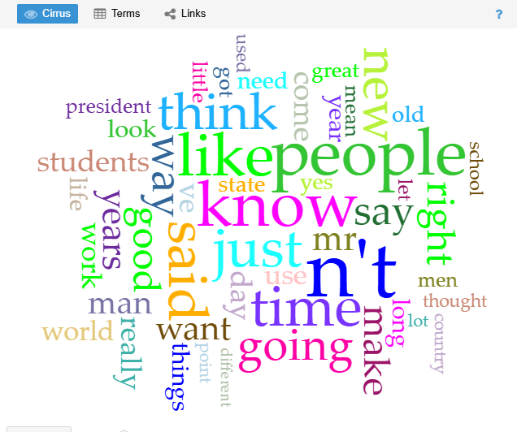
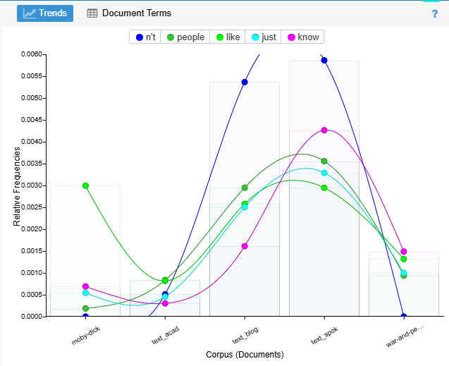
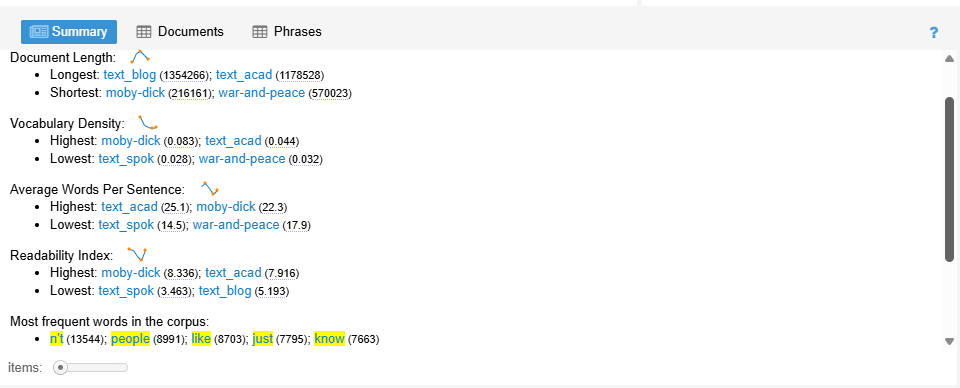

In this project, I compared English texts from the 19th century with modern American English. I used Voyant Tools to see how language has changed over time.
I also tried different tool settings, like looking at repeated words and phrases, to better understand the differences between the texts.

The word cloud shows the words that appear the most. In modern texts, words like "people," "like," and "know" appear often. This shows that modern writing is more casual and similar to everyday speech.
Older texts use more formal and harder words. Compared to modern texts, they sound more serious and complex.

The trends graph shows how often certain words are used. In modern texts, the same words repeat a lot, which makes the writing easier to read.
In older texts, there are more different words. This means the writing is more detailed and uses a wider vocabulary.

The KWIC view shows how words are used in sentences. In modern texts, words like "like" are used in a relaxed way, sometimes as filler words.
In older texts, words are used more carefully and in longer sentences. This makes the writing feel more formal.
Overall, there is a clear difference between older and modern English.
Older texts use longer sentences, harder words, and a more formal style.
Modern English is simpler, shorter, and more like how people talk every day.
This is probably because older texts were written for formal readers, while modern writing is often for quick communication, like blogs or social media.